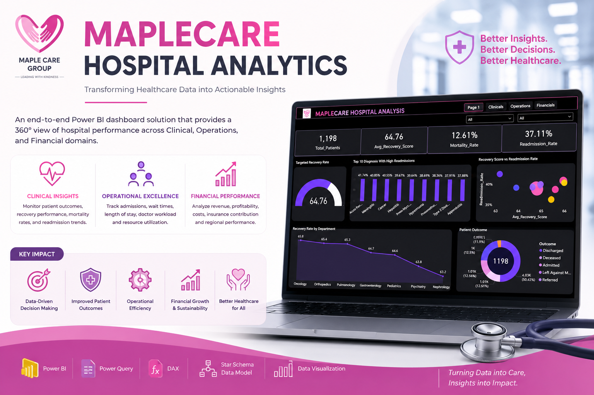

The objective of this project was to develop an interactive dashboard
that enables hospital management to monitor key performance indicators (KPIs),
assess departmental performance, evaluate patient outcomes, and identify
areas requiring operational improvement. This analysis was performed using MS Excel.
The primary objective of this project was to analyze Medcare Hospital performance data and
develop an interactive dashboard that enables stakeholders to monitor hospital
revenue performance, track patient visit trends, evaluate departmental performance,
analyze insurance provider contributions, assess paid and unpaid revenue,
and support data-driven decision-making.
The goal of this project was to analyze 5,000 patient records across multiple departments, treatment types, age groups, visit categories, and geographic regions to uncover actionable insights that can support evidence-based decision-making at Seaborn Hospital.
Using Pivot Tables, Pivot Charts, KPI Cards, and Slicers, the dashboard enabled stakeholders to explore key hospital performance indicators, monitor treatment costs, assess recovery outcomes, and identify patient populations at elevated risk of readmission.

MapleCare Hospital Performance Analysis Dashboard. This project is a healthcare analytics solution developed in Power BI to evaluate hospital performance across Clinical, Operational, and Financial domains. The project involved designing a Star Schema data model, transforming data with Power Query, and developing DAX measures to generate key performance indicators, including patient outcomes, revenue, profitability, mortality, readmission rates, average length of stay, and operational efficiency. The dashboards provide actionable insights into clinical performance, hospital operations, and financial health, enabling data-driven decision-making through intuitive visualizations and business intelligence reporting.
Tools & Technologies: Power BI, Power Query, DAX, Star Schema Data Modelling, Data Visualization, Business Intelligence.

Global HIV Trends and Treatment Effectiveness Analysis is a Power BI project that analyses WHO HIV data to evaluate global infection trends, ART treatment coverage, mortality, and regional disease burden. Using Power Query, a Star Schema data model, and DAX measures, I developed interactive dashboards that transformed complex public health data into actionable insights for evidence-based decision-making.

This project was conducted to analyze the impact of lifestyle factors on skin cancer outcomes. I used SQL to investigate the relationship between smoking, alcohol consumption, and skin-cancer outcomes. Analysis showed that 27.42% of smokers had severe diagnoses compared with 15.22% of drinkers, while 82.14% of patients who both smoked and drank had malignant diagnoses. The project applied SQL joins, conditional logic, aggregation, window functions, and percentage analysis to identify behavioral risk patterns and support evidence-based healthcare insights.
Insights and recommendations were provided after the analysis to inform decision making and improve patient outcomes. Tools & Technologies: SQL, Data Analysis, Healthcare Analytics, Behavioral Risk Assessment, Evidence-Based Decision Making.

Developed an interactive Tableau dashboard to analyze participant reach, diabetes prevalence, risk factors, interventions, outcomes, and programme expenditure, transforming DCSA’s raw programme data into actionable insights to support evidence-based decision-making and resource allocation.